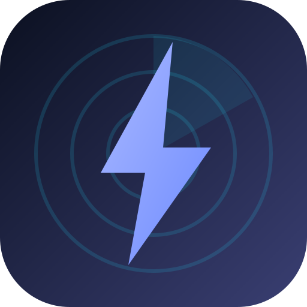

MERIDIAN · PRODUCT
Auros
Severe weather, clarified. Real-time alerts the second they're issued, professional-grade radar decoded right on your device, and the context to know when something's actually coming — in a fast, calm app you can trust.
WHAT IT IS
Built for people who watch the sky.
Auros is a severe-weather app that pulls straight from the source — the National Weather Service, the Storm Prediction Center, the National Hurricane Center, and raw NEXRAD radar — and presents it in a fast, calm, installable app. No ads, no upsells, no account required to start.
It's made to complement a weather radio, not replace it: the instant a warning drops, Auros takes over the screen and sounds an attention tone — and the rest of the time it stays quiet and out of your way.
- PlatformsWin · macOS · Linux · Android · Web
- SourcesNWS · SPC · NHC · NEXRAD
- RadarLevel 3, on-device
- AccountOptional · email / Google
- PriceFree
- Latestv1.0.0
WHAT YOU GET
Everything that matters when the weather turns.
Serious data, presented simply — the kind of detail you'd expect from a desktop weather workstation, in your pocket.
Alerts the second they drop
Live NWS watches and warnings for every place you track — with a full-screen takeover and EAS-style attention tone the moment a tornado or severe warning is issued. Quiet hours and per-event filters cut the noise; tornado warnings always break through.
Genuine pro-grade radar
Single-site NEXRAD Level 3, decoded right on your device — base & storm-relative velocity, dual-pol correlation coefficient, ZDR, KDP, hydrometeor classification, multiple elevation tilts, and a smooth time loop. Plus the national reflectivity mosaic and live warning polygons.
Know the risk in advance
Storm Prediction Center categorical outlooks for Days 1–3, color-coded right on your home screen — so a marginal day and a moderate-risk day never look the same.
Tropical, tracked live
Active hurricanes and tropical systems straight from the National Hurricane Center — forecast cone, track, category and winds, and distance from you, drawn right on the radar.
Weather radio, finally sorted
Every NWS transmitter in the country, ranked by the signal you'll actually get — not just raw distance — so you know the best channel for your spot, and a clear warning when reception is genuinely marginal.
Your places, on every device
Save your locations and preferences to your account and they follow you across web, desktop, and phone. Sign in with email or Google — or skip it entirely and run fully local.
DOWNLOAD
Get Auros
Free for every platform — v1.0.0, straight from GitHub Releases.
Prefer not to install? Open Auros in your browser ↗ · All releases & changelog